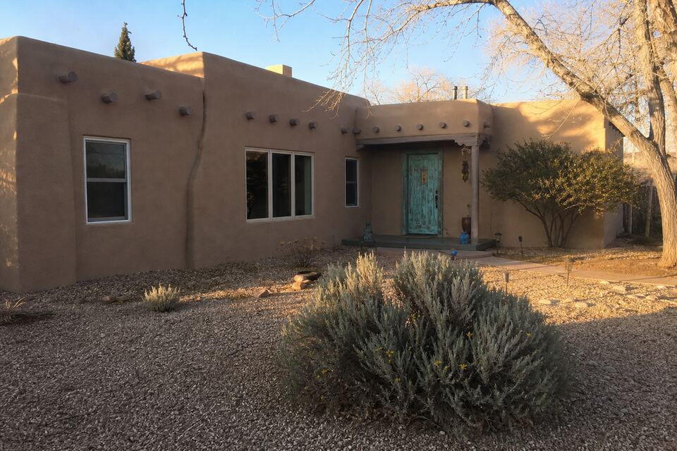
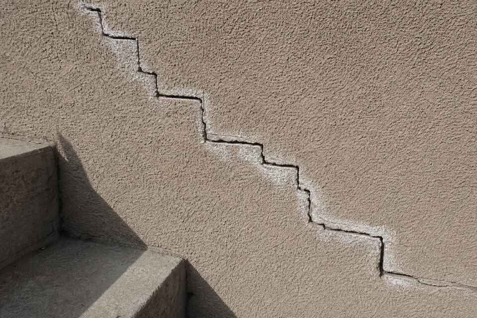

Stucco Repair & Re-Stucco in Santa Fe, NM
Santa Fe Stucco Repair helps homeowners across Santa Fe, Eldorado, Las Campanas, Tesuque, Los Alamos, and Española keep their stucco doing its two jobs — shedding high-desert weather and looking the way Santa Fe is supposed to look. Cracks, crumbling parapets, faded color, a whole re-stucco, or stucco for a new build: call or send the request form and get it taken care of before the next freeze or monsoon works on it.

What brings Santa Fe walls here
Stucco repair
Cracks, chips, bulges, soft spots, and water-damaged patches — diagnosed for cause, not just filled.
Repair page →Re-stucco & color coat
When the whole skin is tired: new finish coats, fresh color, and the cement-vs-elastomeric decision made honestly.
Re-stucco page →New stucco
Three-coat systems for new builds, additions, and garages — the lath-to-finish work that decides the next 30 years.
New stucco page →Parapets & canales
The most-failed square footage on any flat-roofed Santa Fe home — where water gets in and stucco fails first.
Parapet page →Synthetic vs traditional
Acrylic finishes, cement stucco, and lime plaster each belong on different walls. The decision guide.
Decision guide →What it costs
The factors that actually move a stucco number — honestly laid out before anyone is on a ladder.
Cost guide →Why stucco fails here, specifically
Santa Fe sits at 7,000 feet, and the elevation writes the failure list. Winter runs dozens of freeze-thaw cycles — water slips into a hairline crack by afternoon, freezes by night, and pries the crack wider, all season long. Summer flips the script: July and August monsoons drive rain sideways into south- and west-facing walls and pour roof water through canales past parapets that take the worst of it. Add a year-round UV dose that fades color coats and embrittles acrylic finishes, and stucco here ages on a schedule most of the country never sees. None of this means stucco is wrong for Santa Fe — it is the right skin for this place — but it does mean small failures compound fast, and the cheap repair is always the early one.

Three materials, one street
Santa Fe walls wear three different skins, and they cannot be treated alike. Most homes carry cement stucco — the three-coat system over lath that handles weather well and repairs predictably. Many newer builds wear synthetic (acrylic) finishes, flexible and color-rich but with their own aging habits. And the city’s historic adobes wear lime or earth plasters that must breathe — sealing an old adobe wall under cement or elastomeric coatings traps moisture in the mud brick and quietly destroys the wall it was meant to protect. Knowing which wall you have is the first question of every visit, because the right repair for one is the wrong repair for another. The decision guide walks the differences.
Stucco hides its condition. The wall gets seen before a number gets promised — then the scope is itemized and holds.
New stucco against sun-faded stucco never matches day one. What blends, what won’t, and when a full color coat is the honest answer — said up front.
Inside Santa Fe’s historic districts, exterior changes and colors can need city approval. The visit flags it before work, not after a letter.
Request a wall review
One plain sentence is a complete first message — “cracks spreading on the south wall in Eldorado” or “whole house needs color.” A callback confirms your area, the look-at-it visit reads the walls, and the written scope follows before any work starts. Prefer talking? Call (505) 416-4951.
A crack you keep noticing? A wall you stopped loving?
Both are normal first messages. Tell us what you are seeing and where — the look-at-it visit sorts cosmetic from structural and documents the fix before anything starts.
Questions people ask
How do I know if a stucco crack is serious?
Width and pattern. Hairlines under a credit card's thickness are usually finish-coat movement — worth sealing before freeze-thaw grows them. Cracks you can fit a coin into, stair-step patterns following block lines, or cracks paired with bulging or soft spots point at the structure or at water behind the stucco, and deserve a look soon.
Will a stucco patch match my wall color?
Honestly: not perfectly, not on day one. Your wall has years of sun fade a new patch doesn't. Good blending gets close, texture matching matters as much as color, and when a wall has many patches, a full color coat is often the answer that actually looks right.
Can you work on old adobe homes?
Yes — with the right materials. Historic adobe needs breathable lime or earth plaster, not cement stucco or sealing coatings that trap moisture in the mud brick. The visit identifies what your wall is before anything is proposed.
When is the best season for stucco work in Santa Fe?
Stucco wants moderate temperatures to cure — the long spring and fall windows are ideal. Summer work schedules around monsoon afternoons; hard-freeze weeks pause exterior coats. Repairs that keep water out get priority before winter either way.
Do you handle whole-house re-stucco and small repairs?
Both, gladly. A single crack repair is a real job here, and a full re-stucco is the right call when failures cluster — the visit shows the repair-now versus re-stucco math side by side when a wall is near that line.